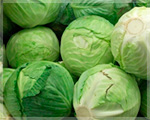

Our products:
-

- Tomatoes
- Vivamus hendrerit mauris ut du gravida ut viverra lectus tincidunt.
-

- Indian Eggplant
- Vivamus hendrerit mauris ut du gravida ut viverra lectus tincidunt.
-

- Cabbage
- Vivamus hendrerit mauris ut du gravida ut viverra lectus tincidunt.
-

- Potatoes
- Vivamus hendrerit mauris ut du gravida ut viverra lectus tincidunt.
Read more
Need a useful advice from breeder?
we want to raise your crops & livestock!
This website template has several pages: Home, Products, Technology, Pricing, Contacts (note that contact us form - doesn't work) Vivamus hendrerit mauris ut dui. gravida ut viverra lectus tincidunt. Cras mattis tempor eros nec tristique. Sed sed felis arcu, vel vehicula augue. Maecenas faucibus sagittis cursus. Fusce tincidunt, tellus eget tristique cursus, orci mi iaculis sem.
John Smith (breeder)